Snakes of Turkey
49 snake species are recorded in Turkey in SnakeList: 14 venomous and 35 non-venomous, from 6 families.
- 49species
- 14venomous
- 35non-venomous
- 6families
Species
Showing 49 species
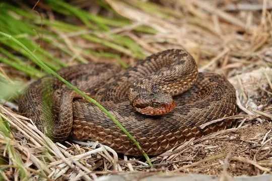
Alburzi ViperVipera eriwanensis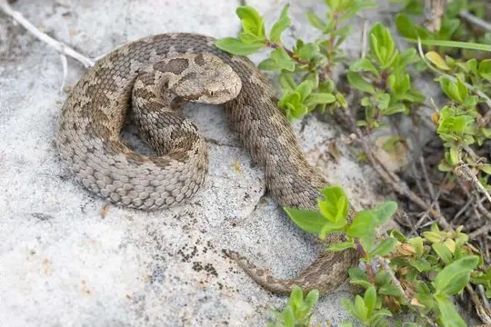
Anatolian Meadow ViperVipera anatolica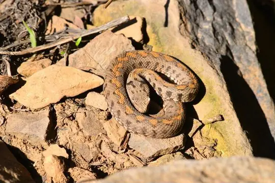
Armenian ViperMontivipera raddei Asia Minor Dwarf RacerEirenis modestus
Asia Minor Dwarf RacerEirenis modestus Asian RacerHemorrhois nummifer
Asian RacerHemorrhois nummifer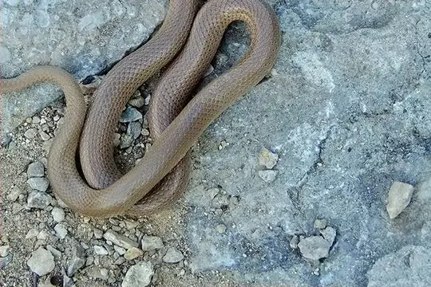
Baran Dwarf RacerEirenis barani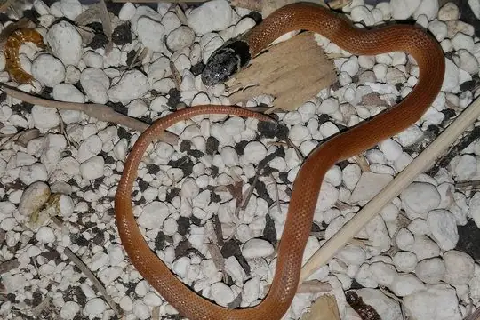
Baran's Dwarf SnakeMuhtarophis barani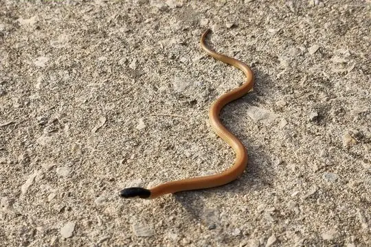
Black-headed Snake (melanocephalus)Rhynchocalamus melanocephalus Black-headed Snake (nigriceps)Telescopus nigriceps
Black-headed Snake (nigriceps)Telescopus nigriceps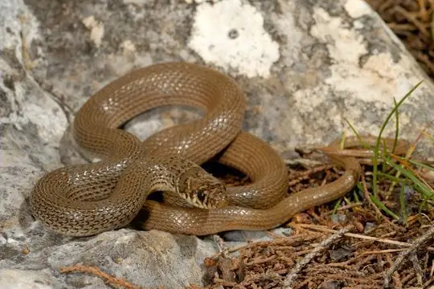
Bozanti Dwarf RacerEirenis aurolineatus Cat SnakeTelescopus fallax
Cat SnakeTelescopus fallax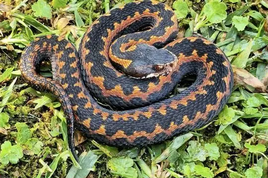
Caucasus ViperVipera kaznakovi Collared Dwarf SnakeEirenis collaris
Collared Dwarf SnakeEirenis collaris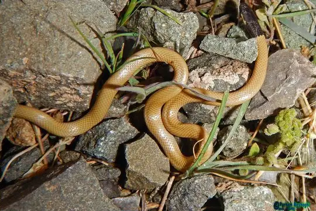
Dark-headed Dwarf Racer (persicus)Eirenis persicus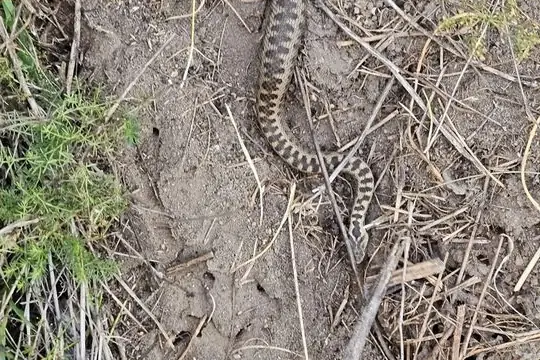
Dinnik's ViperVipera dinniki Dotted Dwarf SnakeEirenis punctatolineatus
Dotted Dwarf SnakeEirenis punctatolineatus East-Four-lined RatsnakeElaphe sauromates
East-Four-lined RatsnakeElaphe sauromates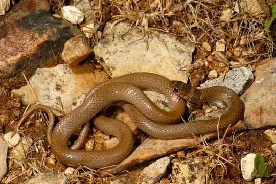
Eiselt's Dwarf RacerEirenis eiselti Eurasian Blind SnakeXerotyphlops vermicularis
Eurasian Blind SnakeXerotyphlops vermicularis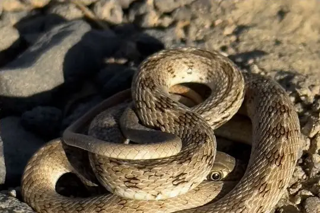
Glossy-bellied RacerPlatyceps ventromaculatus- No photo yetHakkari Dwarf RacerEirenis hakkariensis
 Hook-snouted Worm SnakeMyriopholis macrorhyncha
Hook-snouted Worm SnakeMyriopholis macrorhyncha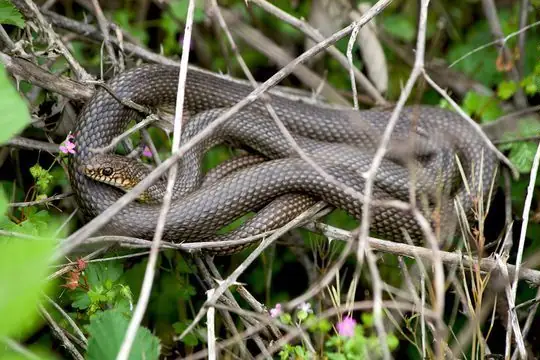
Large Whip Snake (caspius)Dolichophis caspius Large Whip Snake (jugularis)Dolichophis jugularis
Large Whip Snake (jugularis)Dolichophis jugularis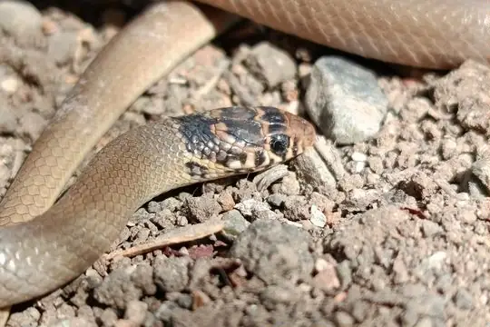
Levantine Dwarf SnakeEirenis levantinus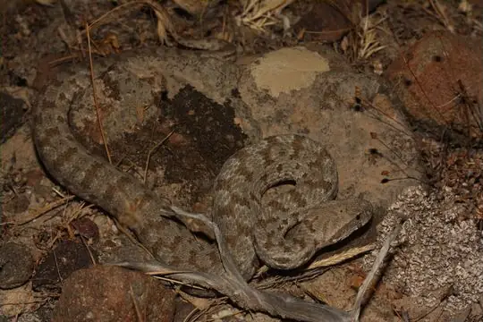
Levantine ViperMacrovipera lebetinus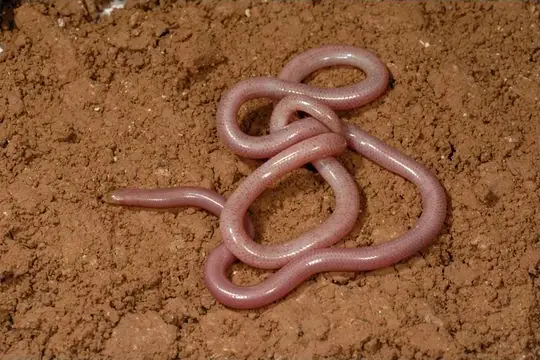
Long-nosed Worm SnakeLetheobia episcopus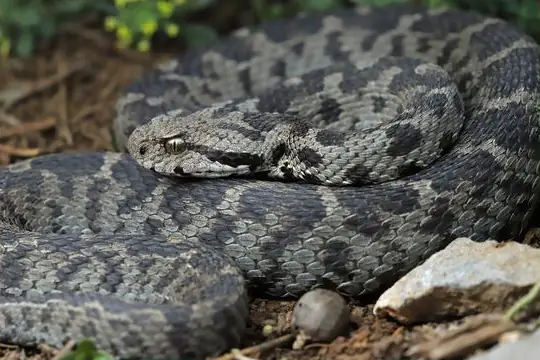
Mount Bulgar ViperMontivipera bulgardaghica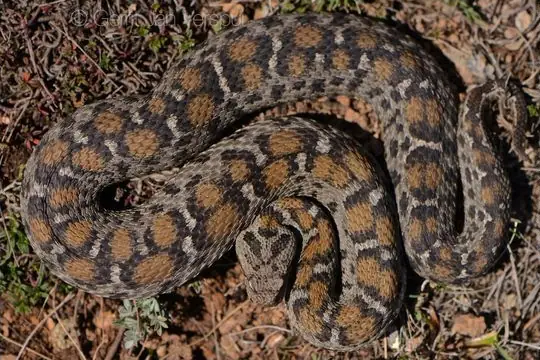
Mountain Viper (albizona)Montivipera albizona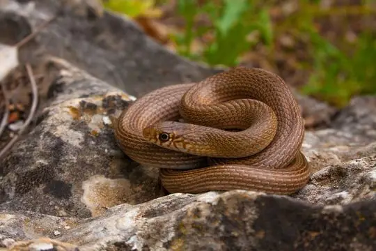
Narrow-striped Dwarf SnakeEirenis decemlineatus Nose-horned ViperVipera ammodytes
Nose-horned ViperVipera ammodytes Ottoman ViperMontivipera xanthina
Ottoman ViperMontivipera xanthina Palestine Kukri SnakeRhynchocalamus satunini
Palestine Kukri SnakeRhynchocalamus satunini Red Whip Snake (collaris)Platyceps collaris
Red Whip Snake (collaris)Platyceps collaris Red-Bellied RacerDolichophis schmidti
Red-Bellied RacerDolichophis schmidti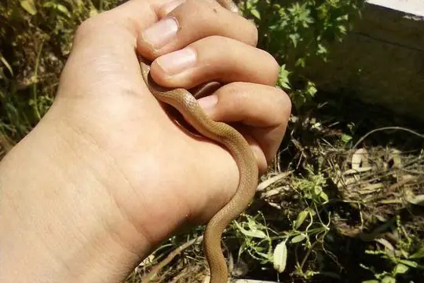
Roth's Dwarf SnakeEirenis rothii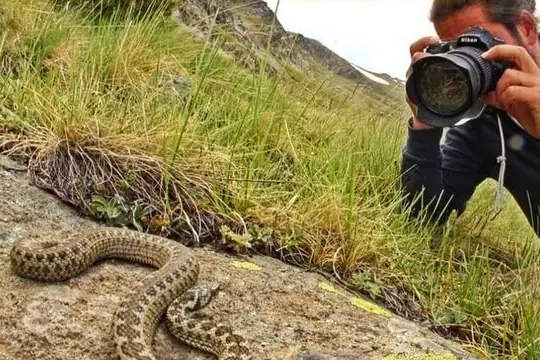
Sako's ViperVipera sakoi Sand Boa (jaculus)Eryx jaculus
Sand Boa (jaculus)Eryx jaculus- No photo yetSinai dwarf racerEirenis coronelloides
 Spotted Whip SnakeHemorrhois ravergieri
Spotted Whip SnakeHemorrhois ravergieri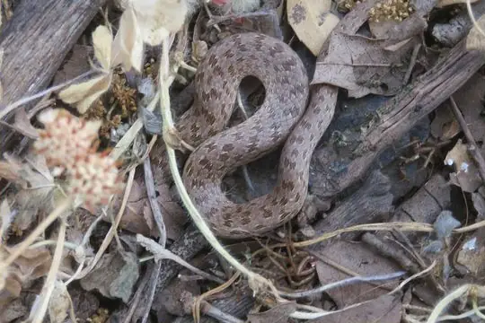
Striped Dwarf SnakeEirenis lineomaculatus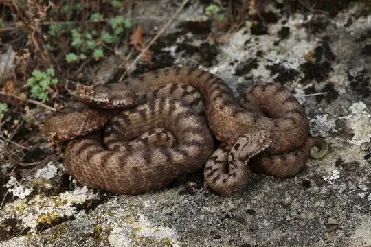
Transcaucasian Long-nosed ViperVipera transcaucasiana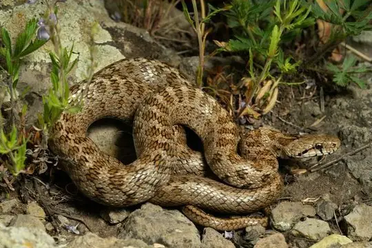
Transcaucasian Rat SnakeZamenis hohenackeri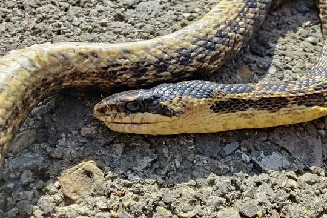
Urartian Rat SnakeElaphe urartica- No photo yetVan Dwarf RacerEirenis thospitis
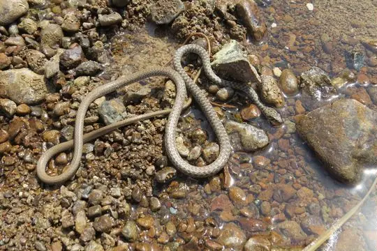
Wadi RacerPlatyceps rhodorachis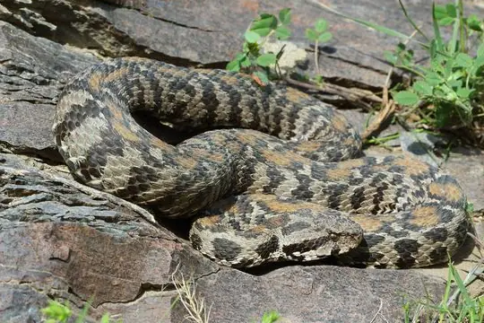
Wagner's ViperMontivipera wagneri Western Dwarf RacerEirenis occidentalis
Western Dwarf RacerEirenis occidentalis- No photo yetWalterinnesia morgani
No snakes in Turkey match.
Turkey’s snakes in numbers
- Families: Colubridae 31, Viperidae 13, Typhlopidae 2, Boidae 1, Elapidae 1, Leptotyphlopidae 1.
- 7 are recorded in no other country in SnakeList: Anatolian Meadow Viper, Baran's Dwarf Snake, Bozanti Dwarf Racer, Hakkari Dwarf Racer, Mountain Viper (albizona), Ottoman Viper, Sako's Viper.